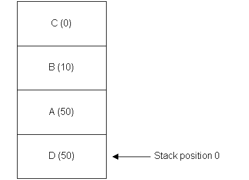

|
| |
The control stack is a mechanism provided by the control framework for handling key press events. The window server, which generates events for control framework applications, channels all key press events to the application that currently has keyboard focus. (Strictly speaking, it channels key press events to the window group that currently has keyboard focus, but since, in the control framework, there is one window group per application, these can be thought of as equivalent.) It is up to the application itself to channel the event to the correct destination: the window server does not associate a key press event with a particular control.
In control framework applications using the standard
app UI, the control stack contains a list of controls which
wish to receive keyboard events. Controls are added to the stack using
CCoeAppUi::AddToStackL(), and their ordering on the stack
determines their priority in receiving key events: the one with the lowest
position on the stack is offered key events first. When a key press event
occurs, it is offered to each control on the stack in turn until it is consumed
(i.e. used by that control).
The ordering of controls on the stack is determined by their
priority, a value passed to CCoeAppUi::AddToStackL(). If several
controls on the stack have the same priority, their ordering is determined by
the order in which they were added to the stack. The diagram below shows a
hypothetical stack containing 4 controls added in the following order: control
A (priority 50 — used for dialogs), control B (priority 10 — used for
menus), control C (priority 0 — used for application views), control D
(priority 50).

Example showing the order and priority of controls on the control stack
On the stack shown in the diagram, key press events will be offered first to control D, followed by A, B and C in that order. A control on the stack can refuse key press events by setting a flag: typically this is done, for example, by dialogs when they are not visible.
Applications use the control stack to channel key press events to destinations in decreasing order of priority, such as:
debug keys
any active dialog
any menu bar (i.e., its hot-keys)
the application view
Although these are not implemented as controls within the control framework (because it provides no concrete controls), Uikon implements controls for debug keys, dialogs and menu bars, and adds them to the control stack. Applications typically implement an application view and in turn add this to the stack. In Uikon applications, debug keys have the highest priority on the stack, so that they are always offered key events first. A key event that is not a debug key is then passed on as follows:
if a dialog is active, it is offered to the dialog: while a dialog is active, no menus can be displayed, and no keys go through to the application view
if no dialog is active, it is offered first to the menu bar as a hot-key, and lastly to the application view (assuming an application view has been added to the control stack).
Within a dialog or an application view, the control stack does not support keyboard focus. This is because the order of controls on the stack is fixed for the duration they exist on the stack, which is normally the lifetime of the application. Keyboard focus determines which visible control on the screen receives key press events that have not already been consumed by controls on the stack. Only one visible control at a time may have keyboard focus, and the control which currently has focus may be changed by the user.
The application view and any dialog in the application will typically be compound controls containing a number of component controls. When either the application view or a dialog receives a key press event, it is up to them to channel the key event to the component that currently has keyboard focus.
Copyright ©2002 Symbian Ltd. 6.1-00174 |
|